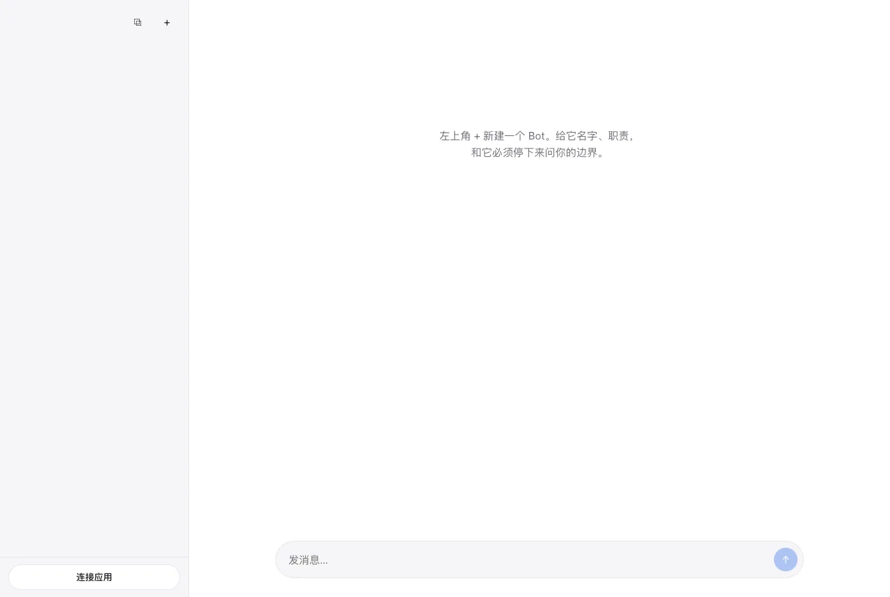
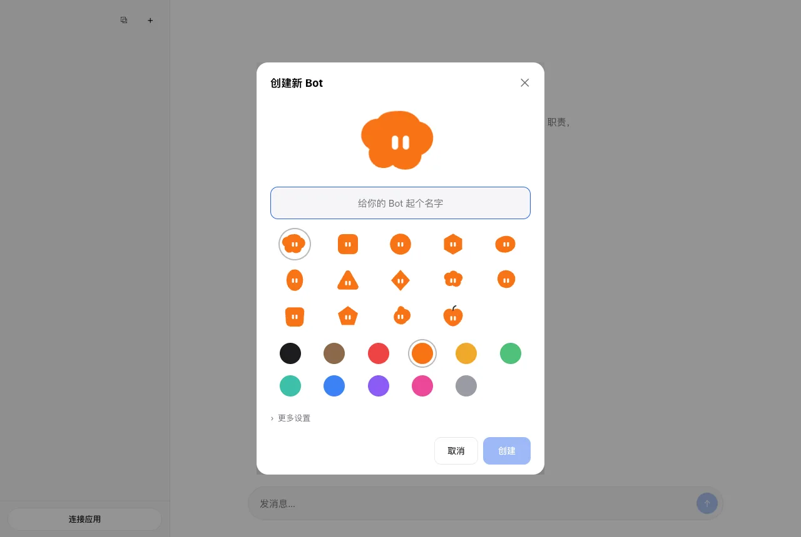
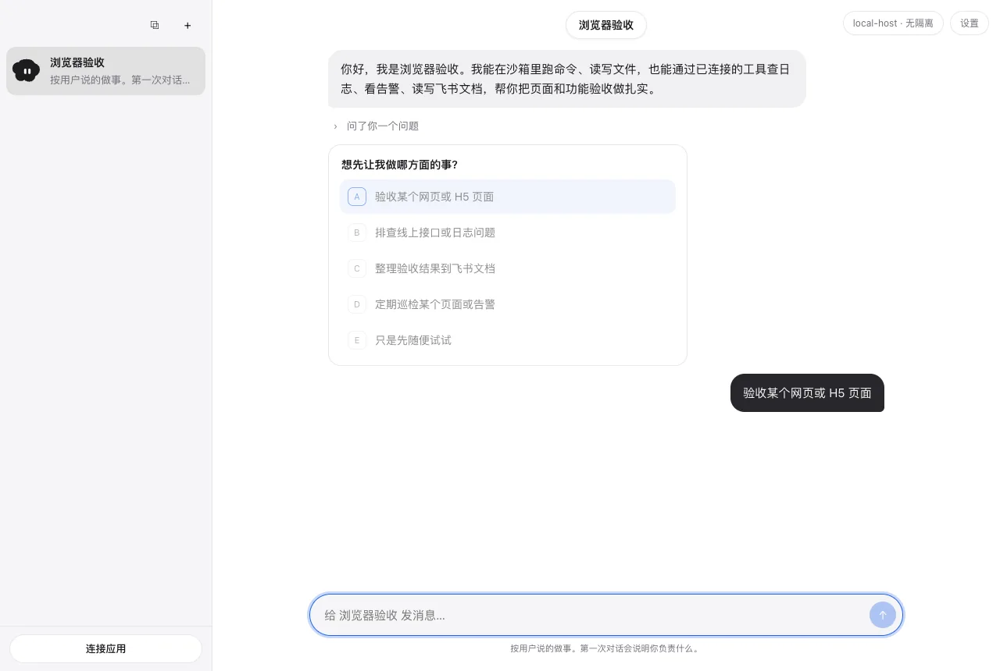
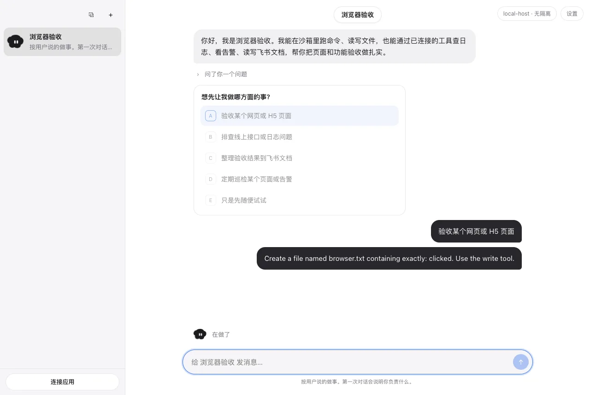
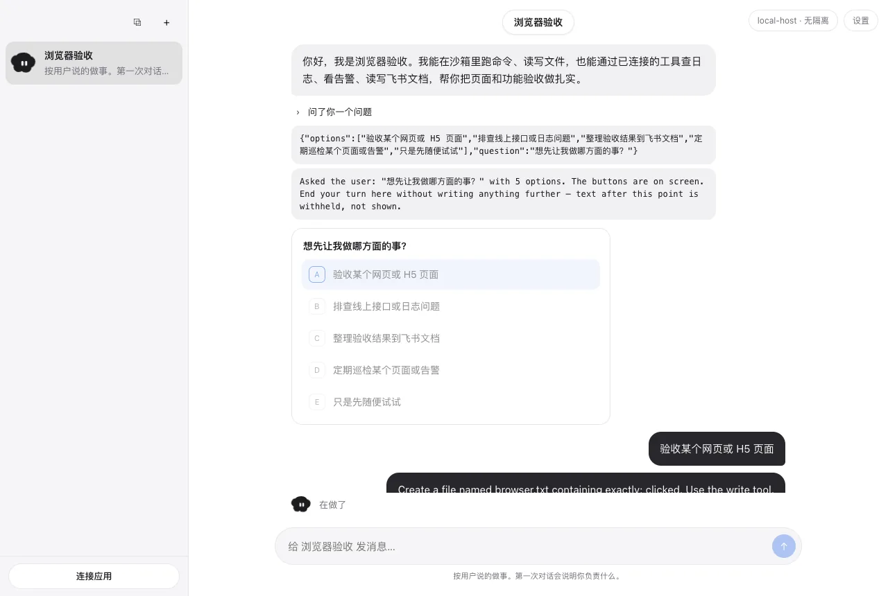
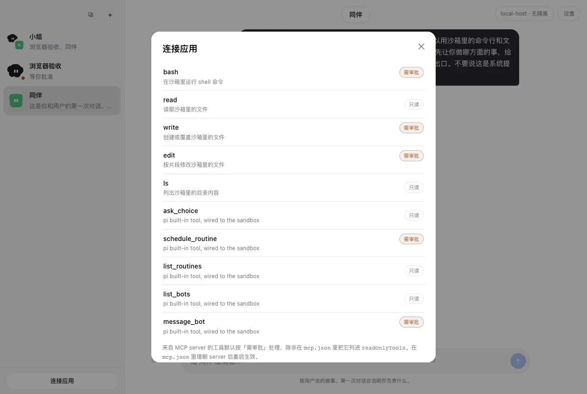
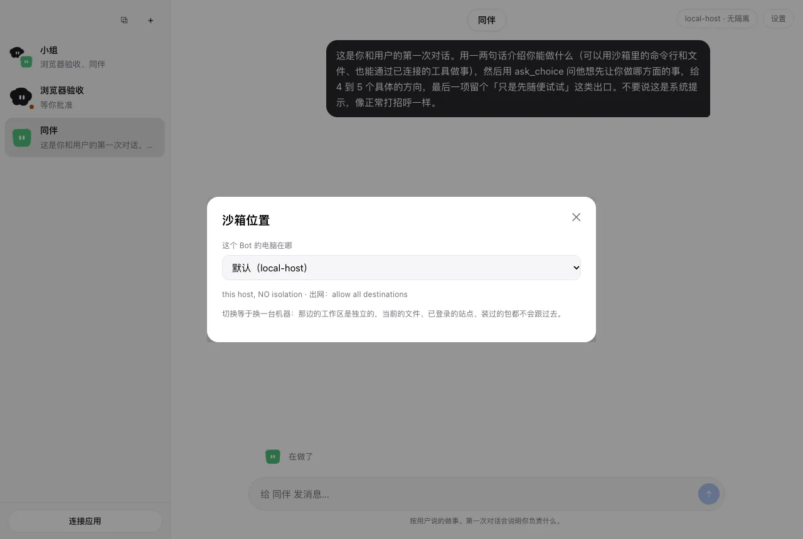
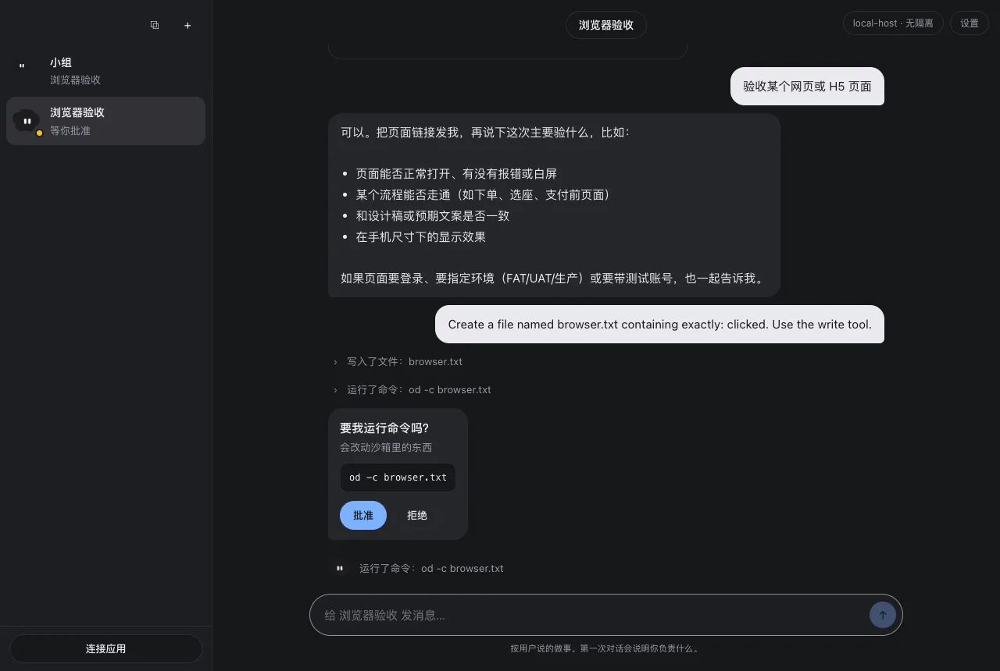
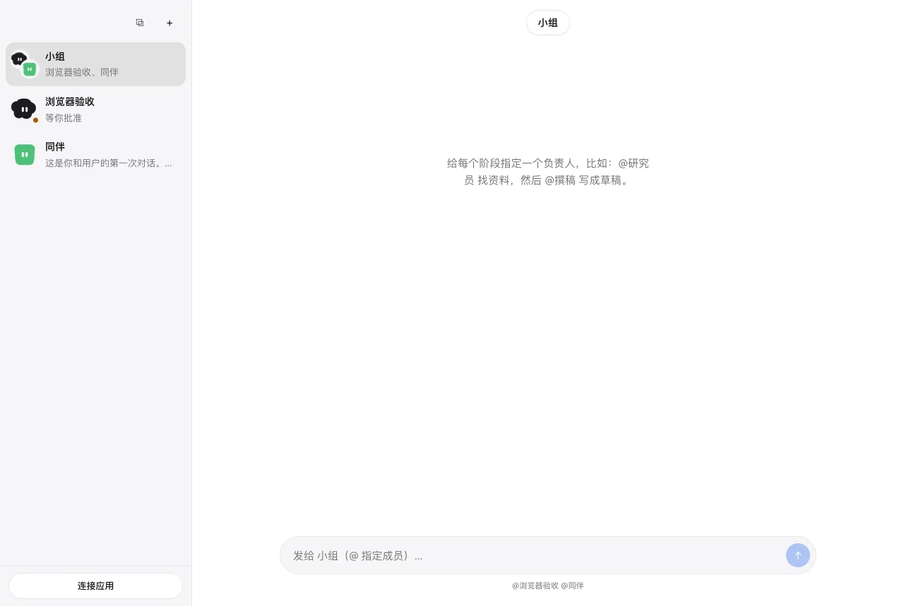
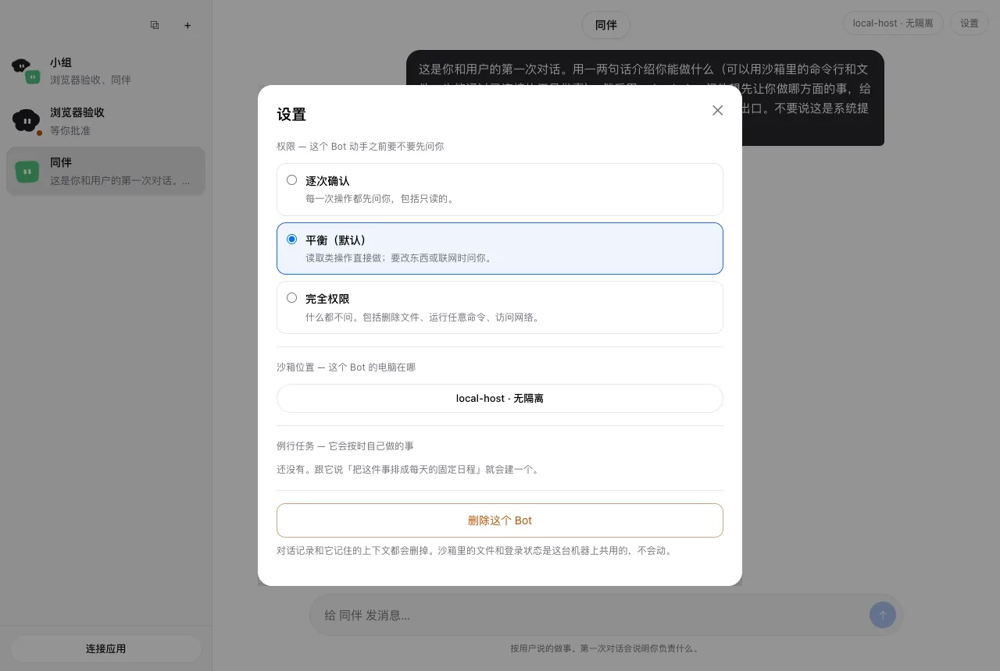

还没有 Bot。正中间写着：给它名字、职责，以及它必须停下来问你的边界。No bot yet. The empty state says to give it a name, a job, and the line it has to stop and ask about.
形状和颜色是它的脸。更多设置里可以先选权限模式和沙箱位置。Shape and color are its face. More settings is where the permission mode and the sandbox target live.
创建之后，它用一张选择题开口，而不是直接去动沙箱。After you create it, it opens with a choice, rather than touching the sandbox on its own.
你选定方向，它开始这一轮。对话留在这个 Bot 自己的记录里。You pick a direction and the turn starts. The thread stays with this bot.
写入会停住。卡片写明原因——会改动沙箱里的东西——以及它要动的文件。批准，或拒绝。A write stops. The card names why — it would change something in the sandbox — and the file it wants to touch. Approve, or refuse.
问过的问题和你的选择留在记录里，工作从这里继续。The question and your answer stay in the thread, and the work continues from there.
bash、read、write、edit、ls，以及提问、例行、转交。MCP 工具默认需要审批，除非在 mcp.json 里标成只读。bash, read, write, edit, ls, plus questions, routines, and handoff. MCP tools need approval unless mcp.json marks them read-only.
每个 Bot 选一个沙箱目标。换一台机器，那边的工作区是另一份，文件不会跟着走。Each bot picks a sandbox target. Another machine means a separate workspace. Files do not come along.
同一套界面的深色。该停下来问你的卡片，还是会停在那里。The same UI in dark. A card that should stop for you still stops.
窄屏上的同一条对话。局域网里用同一枚令牌打开；把端口绑出本机是另开的。The same thread at phone width. On the LAN it uses the same token. Listening beyond localhost is opt-in.
两到六个 Bot 共享一个对话。用 @名字 指定谁来答。Two to six bots share one conversation. @name picks who should answer.
逐次确认、平衡、完全权限。例行还没有的时候，告诉它把这件事排进每天的日程，列表就会出现在这里。Strict, balanced, or full. With no routines yet, telling it to put the job on a daily schedule is what fills this list.
方向键可以切换。画面没有重画。
Arrow keys move between frames. Nothing here was redrawn.